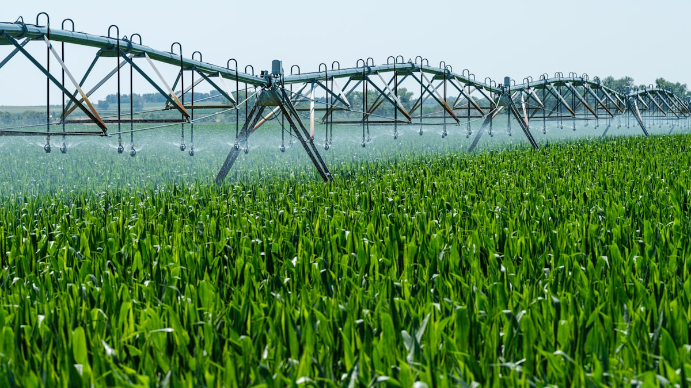
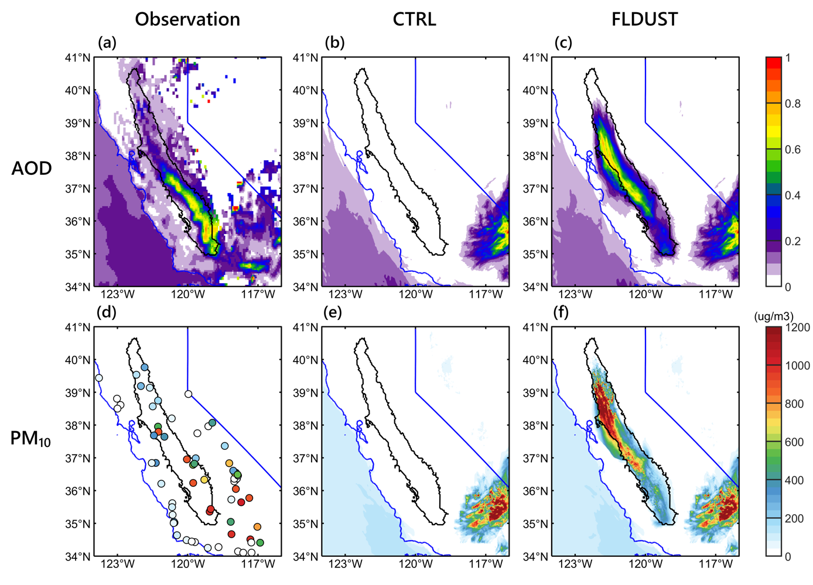
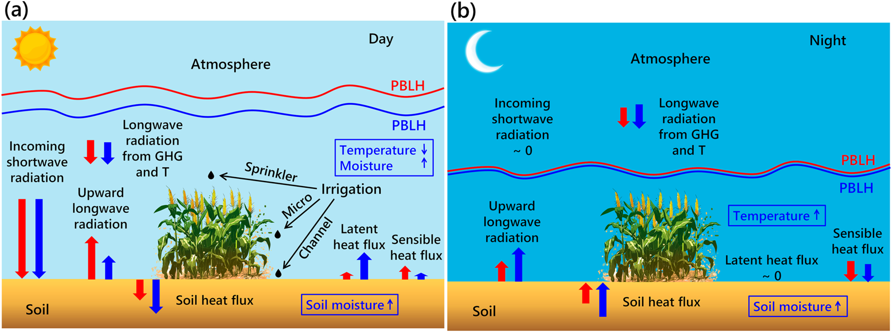
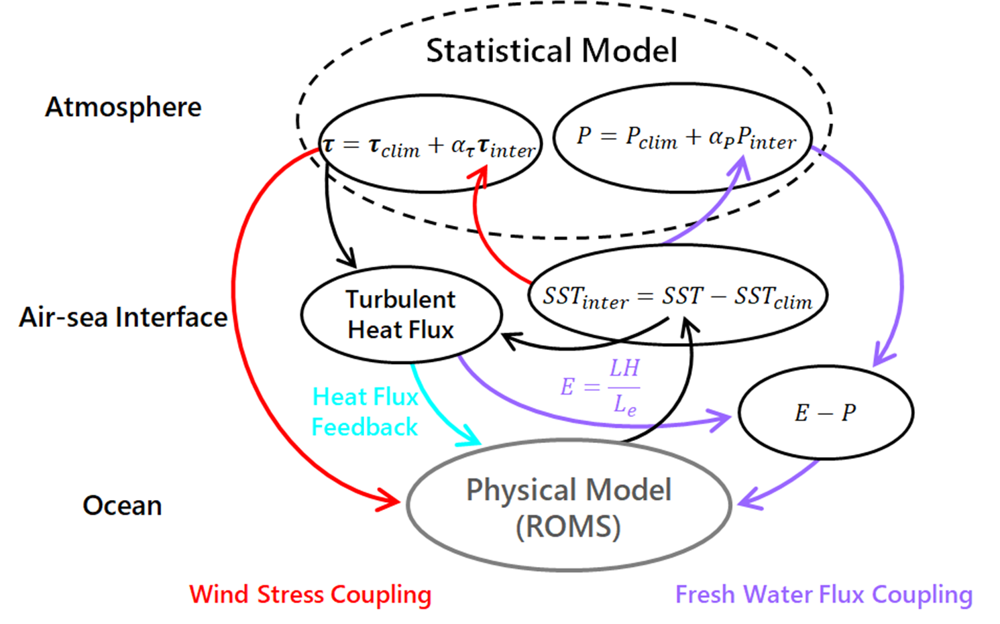
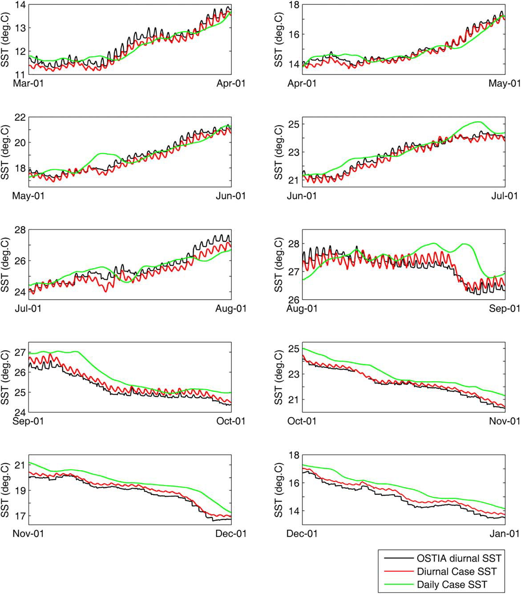

Research Associate III, Woods Hole Oceanographic Institution
Yang Yu
Earth System Modeling | Air–Sea–Land Interaction | Coastal Climate Impacts
I develop high-resolution regional Earth system models to understand how human
activities and natural variability shape regional climate, coastal oceans, and
environmental responses.
Regional Earth system science across the atmosphere, land, and ocean.
I am a Research Associate III in Physical Oceanography at the Woods Hole
Oceanographic Institution. My work focuses on interactions among the atmosphere,
land, and ocean and how natural variability and human activities shape regional
climate and environmental conditions. I develop and apply high-resolution regional
Earth system models, together with numerical experiments, process-based diagnostics,
observations, and data-driven approaches, to investigate coupled processes and their
impacts across scales.
Research
Processes shaping regional climate and environmental responses.
My research examines how human decisions about land, water, and energy alter local
exchanges, how these changes propagate through the coupled Earth system, and under
what conditions local perturbations produce broader regional climate and
environmental responses.
Research Overview
◉
Research Framework
Regional Earth System Modeling
High-resolution regional Earth system modeling provides the foundation for my
research. I develop and apply atmospheric, oceanic, land-surface,
atmospheric-chemistry, and coupled modeling frameworks to resolve processes
that are often simplified in coarser-scale models and to connect local
perturbations with regional climate and environmental responses.
WRFWRF-ChemROMSCOAWSTCoupled Modeling
Primary Research Areas
01
Land–Atmosphere Interactions and Human Land & Water Management
I study how human land and water management, including irrigation and agricultural
fallowing, modifies land–atmosphere interactions, surface water and energy exchanges,
boundary-layer processes, dust emissions, air quality, and regional environmental conditions.
IrrigationFallowingDustAir QualityWater Cycle

02
Coastal Ocean and Offshore Wind Impacts
I investigate how offshore wind development modifies atmospheric and oceanic processes
through changes in momentum, turbulence, mixing, stratification, circulation, and
air–sea exchange. My work uses coupled atmosphere–ocean–biogeochemical modeling
to examine nutrient pathways and ecosystem-relevant responses.
Developing and applying atmosphere–ocean–land coupled models to study cross-system interactions.
⌁ Process Diagnostics
Using process-based analysis and numerical experiments to reveal mechanisms and quantify uncertainties.
⌗ Physical–Statistical Modeling
Combining dynamical and statistical models for improved prediction and projection.
✧ AI / ML Methods
Using ML for model analysis, emulation, and scalable Earth-system prediction.
Selected Research Projects
Current Project
Offshore Wind and Coastal Ocean Impacts
A coupled WRF–ROMS–Darwin modeling framework is being developed to investigate how
offshore wind farms
influence shelf circulation, turbulent mixing, stratification,air–sea exchange, and marine biogeochemistry
on the Northeast U.S. continental shelf.
WRF
ROMS
Darwin
Offshore Wind
Dust & Air Quality
Agricultural Fallowing, Dust Emissions, and Air-Quality Hazards
This research uses WRF-Chem and high-resolution land-use data to examine how
agricultural fallowing, drought-driven land-surface changes, and land-management
decisions influence dust emissions, visibility degradation, and air-quality hazards
in California’s Central Valley.
WRF-Chem
Dust Emissions
Air Quality
Fallow Croplands, Dust Emissions, and Air-Quality Hazards

Impacts of fallow-cropland dust emissions on aerosol loading and near-surface air
quality during the October 11, 2021 dust event. Satellite-observed aerosol optical
depth, EPA PM10 observations, and WRF-Chem simulations are compared at the
satellite overpass time of 13:00 PST. CTRL uses the standard AFWA dust-emission
formulation, whereas FLDUST includes an additional erodibility contribution from
fallow croplands.
Related publications
Yu, Y., Chen, S.-H., Adebiyi, A., Kibria, M. M., & Pandey, S. (2026). Agricultural Fallowing Drives Extreme Anthropogenic Dust and Visibility Degradation During the October 2021 Dust Event in California’s Central Valley. Submitted to Geophysical Research Letters. doi:10.31223/X50195
Irrigation & Forecasting
Agricultural Irrigation Impacts on Local Meteorology and Air Quality
WRF-based irrigation modeling is used to investigate how agricultural water management
modifies local meteorology, land–atmosphere interactions, soil moisture,
boundary-layer processes, and air-quality conditions in California’s Central Valley.
This work supports the development of CARB’s next-generation
air-quality forecasting baseline.
WRF
Irrigation
Air-Quality Forecasting
Irrigation Effects on Land-Surface Water and Energy Exchanges

Schematic illustration of how irrigation alters land-surface water and energy
exchanges during day and night. Blue arrows denote irrigated conditions, while
red arrows denote non-irrigated conditions. Arrow lengths qualitatively represent
the relative magnitude of each process.
Related publications
Yu, Y., Chen, S.-H., Huang, C.-C., Paw U, K. T., Schmitt, C., Zhao, Z., Suvocarev, K., Kisekka, I., Pyles, R. D., Avise, J., Cai, C., Chang, K.-Y., & Lo, M.-H. (2025). A Numerical Study of the Agricultural Irrigation Effects on Summer Soil Moisture and Near-Surface Meteorology in California’s Central Valley. Journal of Hydrometeorology, 26(6), 641–659. doi:10.1175/JHM-D-24-0129.1
Hybrid Coupled Modeling
Hybrid Coupled Model based on ROMS
A flexible hybrid coupled model based on ROMS and a statistical atmospheric model was
developed to study tropical Pacific air–sea interactions, climate variability, and
biogeochemical feedbacks. The framework links ocean dynamics with wind-stress,
heat-flux, and freshwater-flux feedbacks and provides a platform for testing
physical, statistical, and AI-assisted coupling strategies.
ROMS
Coupled Modeling
Climate Variability
AI
Hybrid Coupled Model based on ROMS

Schematic diagram of the Hybrid Coupled Model based on ROMS. Red arrows indicate
wind-stress coupling, purple arrows indicate freshwater-flux coupling, and the
light-blue arrow indicates heat-flux feedback.
Related publications
Yu, Y., Li, Y.-N., Zhang, R.-H., Chen, S.-H., Tseng, Y.-H., Zhang, W., & Wang, H. (2025). A flexible Regional Ocean Modeling System-based hybrid coupled model for El Niño–Southern Oscillation studies: model formulation and performance evaluation. Geoscientific Model Development, 18(17), 5527–5547. doi:10.5194/gmd-18-5527-2025
Li, Y., Yu, Y., Gao, C., Wang, H., & Zhang, R.-H. (2025). Tropical instability waves and their relationships with large-scale oceanic thermal conditions, revealed in ROMS-based hybrid coupled model of the tropical Pacific. Journal of Oceanology and Limnology. doi:10.1007/s00343-025-5053-9
Zhang, R.-H., Zhang, W., Yu, Y., Li, Y., Tian, F., Gao, C., & Wang, H. (2025). A hybrid coupled model for the tropical Pacific constructed by integrating ROMS with a statistical atmospheric model. Journal of Oceanology and Limnology, 43(4), 1037–1055. doi:10.1007/s00343-024-4194-6
Extreme Events
High-Resolution Coupled Modeling of Tropical Cyclones and Precipitation Extremes
High-resolution atmosphere–ocean coupled simulations are used to investigate how
ocean coupling, model resolution, and eddy-mean interactions affect tropical cyclone
intensification and precipitation extremes. Case studies include 1-km WRF–ROMS
simulations of Super Typhoon Muifa (2011) and cloud-permitting simulations of
tropical-cyclone-induced remote rainfall extremes.
WRF
ROMS
Tropical Cyclones
Extremes
Rapid Intensification of Super Typhoon Muifa (2011)
Cloud-top temperature evolution during the rapid intensification of Super Typhoon
Muifa (2011). MTSAT-2 infrared brightness temperature is compared with cloud-top
temperatures simulated by coupled WRF–ROMS experiments at 1-km and 3-km finest
horizontal resolutions.
Related publications
Yu, Y., Chen, S., Tseng, Y., Foltz, G. R., Zhang, R., & Gao, H. (2022). Impacts of model resolution and ocean coupling on mean and eddy momentum transfer during the rapid intensification of super-typhoon Muifa (2011). Quarterly Journal of the Royal Meteorological Society, 148(749), 3639–3659. doi:10.1002/qj.4379
Yu, Y., Gao, T., Xie, L., Zhang, R.-H., Zhang, W., Xu, H., et al. (2022). Tropical cyclone over the western Pacific triggers the record-breaking '21/7' extreme rainfall in Henan, central-eastern China. Environmental Research Letters, 17(12), 124003. doi:10.1088/1748-9326/aca2c4
Yang, Y., Gao, T., Xu, Y., Yu, Y., Liu, X., Xie, L., Zhang, W., Zhang, B., Guo, X., Long, X., & Zhu, G. (2026). Increasing Socioeconomic Exposure to Extreme Tropical Cyclone Precipitation over China. Journal of Hydrometeorology, 27(6), 937–949. doi:10.1175/JHM-D-25-0216.1
Marginal-Sea Dynamics
Diurnal Forcing Effects in the East China Sea
Three-dimensional ROMS regional circulation models are used to investigate how diurnal
atmospheric forcing shapes seasonal temperature and salinity variability in the East
China Sea and adjacent shelf seas. This work highlights how resolving subdaily air–sea
forcing can alter seasonal ocean evolution in marginal seas.
ROMS
Diurnal Forcing
East China Sea
Diurnal Forcing Effects on Shelf-Sea Temperature

Influence of diurnal atmospheric forcing on sea surface temperature over the
eastern China shelf seas. Area-averaged SST from the daily forcing and diurnal
forcing simulations is compared with OSTIA SST analysis, showing how resolving
diurnal variability affects the simulated seasonal evolution of SST from March to
December 2015.
Related publications
Yu, Y., Chen, S.-H., Tseng, Y.-H., Guo, X., Shi, J., Liu, G., Zhang, C., Xu, Y., & Gao, H. (2020). Importance of Diurnal Forcing on the Summer Salinity Variability in the East China Sea. Journal of Physical Oceanography, 50(3), 633–653. doi:10.1175/JPO-D-19-0200.1
Yu, Y., Gao, H., Shi, J., Guo, X., & Liu, G. (2017). Diurnal Forcing Induces Variations in Seasonal Temperature and Its Rectification Mechanism in the Eastern Shelf Seas of China. Journal of Geophysical Research: Oceans, 122(12), 9870–9888. doi:10.1002/2017JC013473
Kuo, Y.-C., Yu, Y., & Tseng, Y.-H. (2023). Interannual changes of the summer circulation and hydrology in the East China Sea: A modeling study from 1981 to 2015. Ocean Modelling, 181, 102156. doi:10.1016/j.ocemod.2022.102156
Open Model Development
Models shared on GitHub
Open modeling frameworks for studying coupled processes, climate variability, and
environmental change across regional Earth systems.
Flexible hybrid coupled model integrating ROMS with a statistical atmospheric model
to investigate tropical Pacific climate variability
and El Niño–Southern Oscillation dynamics.
WRF-based modeling framework representing agricultural irrigation and evaluating
its impacts on land-surface fluxes, near-surface meteorology, and regional air
quality.
Research workflows supporting Earth system modeling, scientific diagnostics, and
reproducible analysis.
TCCyclone Diagnostics
TC_tool
Tropical-cyclone diagnostic toolbox for WRF output, including storm-center tracking,
storm-following coordinate transformations, and momentum, kinetic-energy, and
potential-vorticity budget analyses.
Utilities for preparing ROMS grids, initial and boundary conditions, and
atmospheric, tidal, river, and biogeochemical forcing files, with NetCDF I/O and
visualization support.
Yang, Y., Gao, T., Xu, Y., Yu, Y., Liu, X., Xie, L.,
Zhang, W., Zhang, B., Guo, X., Long, X., & Zhu, G. (2026).
Increasing Socioeconomic Exposure to Extreme Tropical Cyclone Precipitation
over China. Journal of Hydrometeorology, 27(6), 937–949.
doi:10.1175/JHM-D-25-0216.1
Lee, A., Chen, S.-H., Huang, C.-C., Nathan, T. R., Yu, Y.,
Kavaya, M. J., Bedka, K. M., Nehrir, A. R., Thornhill, K. L.,
Barton-Grimley, R. A., Collins, J. E., Cooney, J. W., Ferrare, R. A.,
Liu, Z., Lambrigtsen, B., Schreier, M., Wong, S., & Veals, P. G. (2026).
Improved Analysis and Prediction of Tropical Storm Hermine (2022) over the
Eastern Tropical Atlantic Using CPEX-CV Observations.
Monthly Weather Review.
doi:10.1175/MWR-D-25-0062.1
2025
Li, Y., Yu, Y., Gao, C., Wang, H., & Zhang, R.-H. (2025).
Tropical instability waves and their relationships with large-scale oceanic
thermal conditions, revealed in ROMS-based hybrid coupled model of the tropical
Pacific. Journal of Oceanology and Limnology.
doi:10.1007/s00343-025-5053-9
Yu, Y., Li, Y.-N., Zhang, R.-H., Chen, S.-H., Tseng, Y.-H.,
Zhang, W., & Wang, H. (2025). A flexible Regional Ocean Modeling System-based
hybrid coupled model for El Niño–Southern Oscillation studies: model formulation
and performance evaluation. Geoscientific Model Development, 18(17),
5527–5547. doi:10.5194/gmd-18-5527-2025
Yu, Y., Chen, S.-H., Huang, C.-C., Paw U, K. T., Schmitt, C.,
Zhao, Z., Suvocarev, K., Kisekka, I., Pyles, R. D., Avise, J., Cai, C.,
Chang, K.-Y., & Lo, M.-H. (2025). A Numerical Study of the Agricultural
Irrigation Effects on Summer Soil Moisture and Near-Surface Meteorology in
California’s Central Valley. Journal of Hydrometeorology, 26(6), 641–659.
doi:10.1175/JHM-D-24-0129.1
Gong, X., Yu, Y., Shi, X., Lin, X., Liu, G., Dong, Z., Wang, X.,
Zheng, J., Lembke-Jene, L., & Lohmann, G. (2025). Thresholds in East Asian
marginal seas circulation due to deglacial sea level rise.
npj Climate and Atmospheric Science, 8(1), 83.
doi:10.1038/s41612-025-00927-y
Zhang, R.-H., Zhang, W., Yu, Y., Li, Y., Tian, F., Gao, C.,
& Wang, H. (2025). A hybrid coupled model for the tropical Pacific constructed
by integrating ROMS with a statistical atmospheric model.
Journal of Oceanology and Limnology, 43(4), 1037–1055.
doi:10.1007/s00343-024-4194-6
2024
Zhang, W., Gao, C., Tian, F., Yu, Y., Wang, H., & Zhang, R.-H.
(2024). Representing ocean biology-induced heating effects in ROMS-based
simulations for the Indo-Pacific Ocean. Frontiers in Marine Science, 11,
1–17. doi:10.3389/fmars.2024.1473208
2023
Geng, X., Wu, C., Yang, Z., Zhu, J., Tang, K., Lin, J., Liu, Y., Zhang, Y., An, M., Zhao, W., & Yu, Y. (2023). Spatiotemporal variations and impact factors of nutrients in the Sanya Bay, northern South China Sea. Environmental Science and Pollution Research, 30(31), 76784-76797. doi:10.1007/s11356-023-27527-8
Kuo, Y.-C., Yu, Y., & Tseng, Y.-H. (2023). Interannual changes of the summer circulation and hydrology in the East China Sea: A modeling study from 1981 to 2015. Ocean Modelling, 181, 102156. doi:10.1016/j.ocemod.2022.102156
Zhu, J., Zhou, Q., Zhou, Q., Geng, X., Shi, J., Guo, X., Yu, Y., Yang, Z., & Fan, R. (2023). Interannual variation of coastal upwelling around Hainan Island. Frontiers in Marine Science, 10, 1–10. doi:10.3389/fmars.2023.1054669
2022
Liu, H., Lin, L., Wang, Y., Du, L., Wang, S., Zhou, P., Yu, Y., Gong, X., & Lu, X. (2022). Reconstruction of Monthly Surface Nutrient Concentrations in the Yellow and Bohai Seas from 2003–2019 Using Machine Learning. Remote Sensing, 14(19), 5021. doi:10.3390/rs14195021
Yu, Y., Chen, S., Tseng, Y., Foltz, G. R., Zhang, R., & Gao, H. (2022). Impacts of model resolution and ocean coupling on mean and eddy momentum transfer during the rapid intensification of super-typhoon Muifa (2011). Quarterly Journal of the Royal Meteorological Society, 148(749), 3639–3659. doi:10.1002/qj.4379
Yu, Y., Gao, T., Xie, L., Zhang, R.-H., Zhang, W., Xu, H., et al. (2022). Tropical cyclone over the western Pacific triggers the record-breaking '21/7' extreme rainfall in Henan, central-eastern China. Environmental Research Letters, 17(12), 124003. doi:10.1088/1748-9326/aca2c4
2021
Meng, S., Gong, X., Yu, Y., Yao, X., Gong, X., Lu, K., et al. (2021). Strengthened ocean-desert process in the North Pacific over the past two decades. Environmental Research Letters. doi:10.1088/1748-9326/abd96f
Zhang, C., Shi, Z., Zhao, J., Zhang, Y., Yu, Y., Mu, Y., et al. (2021). Impact of air emissions from shipping on marine phytoplankton growth. Science of The Total Environment, 769, 145488. doi:10.1016/j.scitotenv.2021.145488
2020
Ding, X., Guo, X., Zhang, C., Yao, X., Liu, S., Shi, J., Luo, C., Yu, X., Yu, Y., & Gao, H. (2020). Water conservancy project on the Yellow River modifies the seasonal variation of Chlorophyll-a in the Bohai Sea. Chemosphere, 254, 126846. doi:10.1016/j.chemosphere.2020.126846
Feng, L., Yu, Y., Gao, H., & Yao, X. (2020). Surface water formation on the natural surface under supersaturation: from local water balance to air pollutant deposition. Air Quality, Atmosphere & Health. doi:10.1007/s11869-020-00901-y
Qi, J., Yu, Y., Yao, X., Gang, Y., & Gao, H. (2020). Dry deposition fluxes of inorganic nitrogen and phosphorus in atmospheric aerosols over the Marginal Seas and Northwest Pacific. Atmospheric Research, 245, 105076. doi:10.1016/j.atmosres.2020.105076
Yu, Y., Chen, S.-H., Tseng, Y.-H., Guo, X., Shi, J., Liu, G., Zhang, C., Xu, Y., & Gao, H. (2020). Importance of Diurnal Forcing on the Summer Salinity Variability in the East China Sea. Journal of Physical Oceanography, 50(3), 633–653. doi:10.1175/JPO-D-19-0200.1
Zhang, C., He, J., Yao, X., Mu, Y., Guo, X., Ding, X., Yu, Y., Shi, J., & Gao, H. (2020). Dynamics of phytoplankton and nutrient uptake following dust additions in the northwest Pacific. Science of The Total Environment, 739, 139999. doi:10.1016/j.scitotenv.2020.139999
Before 2020
Liu, Q., Jiang, Y., Wang, Q., Wang, M., McMinn, A., Zhao, Q., Xue, C., Wang, X., Dong, J., Yu, Y., Han, Y., & Zhao, J. (2019). Using picoeukaryote communities to indicate the spatial heterogeneity of the Nordic Seas. Ecological Indicators, 107, 105582. doi:10.1016/j.ecolind.2019.105582
Zhang, C., Yao, X., Chen, Y., Chu, Q., Yu, Y., Shi, J., & Gao, H. (2019). Variations in the phytoplankton community due to dust additions in eutrophication, LNLC and HNLC oceanic zones. Science of The Total Environment, 669, 282–293. doi:10.1016/j.scitotenv.2019.02.068
Zhu, Y., Li, K., Shen, Y., Gao, Y., Liu, X., Yu, Y., Gao, H., & Yao, X. (2019). New particle formation in the marine atmosphere during seven cruise campaigns. Atmospheric Chemistry and Physics, 19(1), 89–113. doi:10.5194/acp-19-89-2019
Zhang, C., Gao, H., Yao, X., Shi, Z., Shi, J., Yu, Y., Meng, L., & Guo, X. (2018). Phytoplankton growth response to Asian dust addition in the northwest Pacific Ocean versus the Yellow Sea. Biogeosciences, 15(3), 749–765. doi:10.5194/bg-15-749-2018
Xu, Z., Song, X., Wang, M., Liu, Q., Jiang, Y., Shao, H., Liu, H., Shi, K., & Yu, Y. (2017). Community patterns and temporal variation of picoeukaryotes in response to changes in the Yellow Sea Warm Current. Journal of Oceanography, 73(5), 687–699. doi:10.1007/s10872-017-0425-1
Yu, Y., Gao, H., Shi, J., Guo, X., & Liu, G. (2017). Diurnal Forcing Induces Variations in Seasonal Temperature and Its Rectification Mechanism in the Eastern Shelf Seas of China. Journal of Geophysical Research: Oceans, 122(12), 9870–9888. doi:10.1002/2017JC013473
Meng, L., Gao, H. W., Yu, Y., Yao, X. H., Gao, Y., Zhang, C., & Fan, L. (2017). A new approach developed to study variability in North African dust transport routes over the Atlantic during 2001–2015. Geophysical Research Letters, 44(19), 10,026–10,035. doi:10.1002/2017GL074478
Yu, Y., Gao, H., & Shi, J. (2017). Impacts of Diurnal Forcing on Temperature Simulation in the Shelf Seas of China. Periodical of Ocean University of China, 47(4), 106–113. doi:10.16441/j.cnki.hdxb.20160138
Yu, Y., Sun, P., Cui, H., Sheng, H., Zhao, F., Tang, Y., & Chen, Z. (2015). Effects of trawl selectivity and genetic parameters on fish body length under long-term trawling. Journal of Ocean University of China, 14(5), 835–840. doi:10.1007/s11802-015-2885-5
Sun, P., Liang, Z.-L., Yu, Y., Tang, Y.-L., Zhao, F.-F., & Huang, L.-Y. (2015). Trawl selectivity-induced evolution effects on age structure and size-at-age of largehead hairtail (Trichiurus lepturus) Linnaeus, 1758 in the East China Sea, China. Journal of Applied Ichthyology, 31(4), 657–664. doi:10.1111/jai.12774
Submitted
Yu, Y., Chen, S.-H., Adebiyi, A., Kibria, M. M., & Pandey, S. (2026). Agricultural Fallowing Drives Extreme Anthropogenic Dust and Visibility Degradation During the October 2021 Dust Event in California’s Central Valley. Submitted to Geophysical Research Letters. doi:10.31223/X50195
Gao, T., Yu, Y., Chen, S.-H., Zhang, W., Gao, J., Liu, J. Major contribution of the western Pacific subtropical high to tropical cyclone remote precipitation extremes during the "21.7" Henan event. Submitted to Journal of Geophysical Research: Atmospheres.
Chen, S.-H., Yang, S.-C., Huang, C.-C., Yu, Y., Matsui, T., Zhu, Y., Fu, B., Xue, X., Chen, C.-Y. Influence of aerosol-attenuated Backscatter Data Assimilation on Dust Analysis and Forecasts over the Tropical Atlantic Ocean. Submitted to Quarterly Journal of the Royal Meteorological Society.
Wang, K.-Y., Chen, S.-H., Schmitt, C., Yu, Y., Suvocarev, K., McDonald, I., Chen, X.-M., Di, P., Liu, K., Hus, Y.-K., Thiruvenkatachari, R., Avise, J. Impacts of Marine Air Penetration and Irrigation on Planetary Boundary Layer Height in California’s Central Valley. Submitted to Journal of Geophysical Research: Atmospheres.